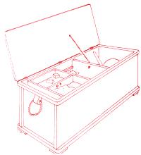
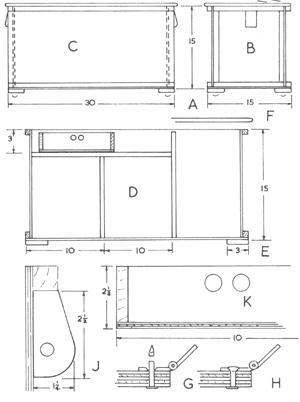
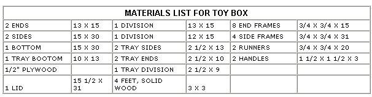

With Christmas just around the corner, a Sunday afternoon spent constructing this smartly designed toy box could simultaneously solve the two biggest challenges for any parent: what to put under the tree and how to con the kids into picking up their room. You may still find apple cores from the last harvest left under the bed, but we promise that this box will be a big help in keeping those small, easy-to-lose toys together. With its compartments and sliding tray, the toy box encourages kids to put away playthings in an orderly manner and to develop a system to help them find what they want (without bothering you).
The box (below) is about the size of a blanket chest. You may wish to modify size to suit your needs, but the instructions are for a box 15" wide and deep and 30" long. Construction is mainly with plywood panels stiffened with 3/4"-square solid wood strips. There are no special joints to cut. If glue is used, it should be satisfactory to attach strips with nails at about 3" spacing, with screws at corner joints and anywhere where greater loads may be expected.
First, make two end assemblies (Fig. B). Top and bottom strips go across, and the up rights fit between them. Then, cut the plywood for the two sides (Fig. C). Mark the positions of the divisions and the runners (Fig. D.) Attach the 1/2"-square runners to the sides. Cut back enough to fit inside the end. Put the outside stiffening strips on the top and bottom edges of the sides.
Make the two divisions the same widths as the ends. The taller one should come within 1/2" of the top edge of a side. The lower one should be notched to fit around the runners and should come to within about 1/8" of their top edges. Round the top edges of both divisions. Drill a hole 3/4" down from the center of the top of the taller division to take the cord which will hold the opened lid. Lightly countersink both sides. Join the sides to the ends and add the divisions.
Cut the bottom slightly oversize and attach it to the ends and sides to hold the assembly square. Plane the edges of the bottom level and add blocks under the corners, either as attachment points for the casters or to serve as feet if you do not want casters. Strengthen the top corners with screws driven from the stiffening strips on the sides into the stiffening strips on the ends. Round the comers of the stiffening strips, top and bottom. Take sharp edges off all around.
Cut the lid to come level at the hinge side, but overhang 1/4" at the ends and front (Fig. F). Round all edges and corners, except the hinged edge. Use three hinges, which may be 2" long. If the hinges are thin, it should be satisfactory to fit them without set ting them in, but thick ones will be neater and cause less gap if the bottom leaf is set in.
Plywood 1/2" thick does not provide much grip for screws, so it would be better to rivet the hinges to the lid. If you do not have suitable soft metal rivets, use copper nails. Drill and drive through each nail, then cut off its end (Fig. G), leaving enough to hammer into the countersunk hole of the hinge (Fig. H).
Drill a hole in the lid for the cord to match the position of the hole in the division. Countersink it slightly on both sides. Colored braided cord, about 3/16" in diameter, would be suitable. Screw the hinges to the rear edge of the box.
Although softwood will be satisfactory for other parts of the box, the blocks for the rope loops are better made of a close-grained hardwood. Cut them to shape (Fig. J) 1 1/2" thick and drill a hole for the rope, which may be about 3/8" in diameter. Attach the blocks with glue and three or four screws from inside.
The sliding tray is a box, which may be of solid wood or cutoffs of 1/2" plywood. Nail or screw corners and add a 1/4" plywood bottom. The division may have two finger holes for lifting and sliding (Fig. K).
A painted finish would be appropriate. A light color inside adds visibility. The outside could be darker, or you may choose pink for a girl or blue for a boy. You could add the child's name and other painted or decal decorations. Screw on furniture-type casters under the corners.
Reprinted from Percy W. Blandford's One-Weekend Country Furniture Projects ( TAB Books). December/January 1992
|
|
 |
 |
|
 |
|
|